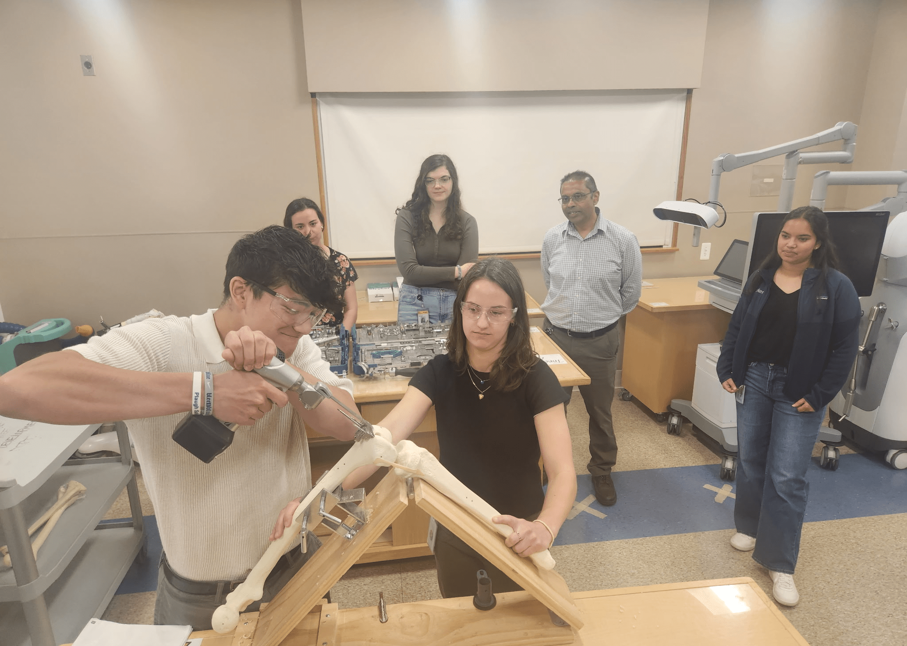

Goal
Work with a team to develop improved tibial inserts for total knee arthroplasty.

Testing
Goal: Evaluate the performance of a new tibial insert and its sterile packaging through rigorous testing protocols.


- Compared knee laxity values between novel and legacy inserts
- Evaluated packaging after simulated 5-year shelf life
- Performed tests on 50+ samples
Automation
Goal: Streamline the creation of digital files for products to improve team efficiency.

- Automated the generation of 316 digital template files
- Programmed macros in PTC Creo
- Batch processed files using MATLAB




PTC Creo
GD&T
FDM
Hypothesis Testing
Cross-Functional Collaboration
Technical Communication